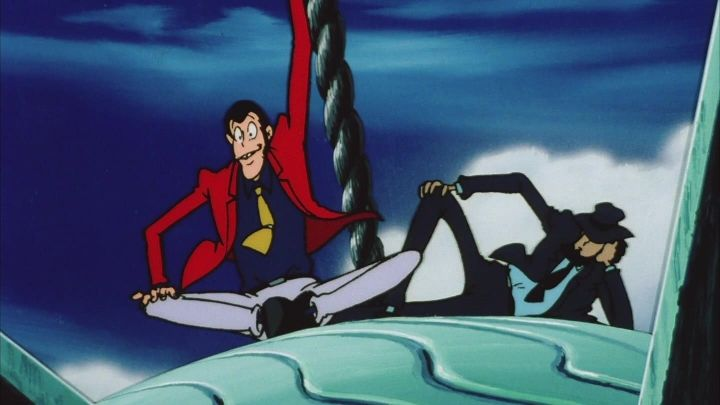

Disclaimer: This is a review of the feature-length television special "Lupin the Third - Bye Bye, Lady Liberty," also known with other titles, such as the original Japanese title of "Bye Bye Liberty, Close Call!". There's a countless number of films and specials for the classic Japanese franchise "Lupin the Third," but it had to start somewhere. "Bye Bye, Lady Liberty" was the first feature-length special, released in 1989, a few years after the "Part III" television series ended and after a few theatrical films. This would be a sign of trends to come, as most of Lupin's adventures to follow would be TV specials (27 as of this writing). Based on the timing, you'd be right to guess the art style best resembles "Part III," with a little bit of the classic "Part II" storytelling. "Lady Liberty" has some interesting ideas, but it's weakness might be that it has too many of them. It starts with Lupin stealing all the data on his profile from a police-force's computer database. He's distraught that the computer is able to predict his future actions from that past data, making his future heists meaningless, so Lupin decides to retire. Jigen has trouble getting Lupin, Goemon or Fujiko on board for the next job, so he gets an old friend Rooster to come in, but he dies from a mysterious group for not revealing the location of a giant diamond egg hidden somewhere in New York's Statue of Liberty from a past job. Jigen and Lupin decide to find the diamond before the group (the Three Masons), and since it'll take time to search, they steal the entire statue into the sky to take their time. There's also a computer-whiz kid named Michael that wants to hire Lupin for a job involving his mother and a computer virus, and he starts helping Lupin with the Liberty job. Then there's an elegant woman named Isabel that is also hunted by the group, saved by Goemon by chance. Fujiko gets wrapped up for attempting to steal from the wrong people. And there's the questions surrounding the mysterious Three Masons, the shadow group made up of three ranked leaders, and what purpose they want the diamond for. (And if you think "Three Masons" is a silly name, watch the English dub to see what they're called there.)It's a lot of subplots, and even though they all come together in the end, it's a bit too confusing for what it's worth. Senior director Osamu Dezaki did his best to make this a cinematic and exciting adventure, with some nice editing touches, but the pacing struggles. I also get the sense that he wanted this to be a more adult, serious movie, and there is some violence and brief nudity to justify that, but he was also restricted to Lupin's comical, cartoonish persona. The tonal balance doesn't balance. The story also takes some odd turns, namely a fantastical, magical development in the final act. It's not the only time Lupin has been subject to such crazy stories, and it's interesting in the moment, but undoubtably ridiculous. All of these desparate elements about computer technology and magic hooden men are disappointing to the core setpiece that inspires the title: the image of the Statue of Liberty being stolen off the ground with a giant balloon, something only Lupin would be crazy to pull off. At least it remains interesting to the end, and does involve all the main cast from the series in direct ways, although Fujiko gets shafted the most out of them this time. Visually, the movie looks like a really good version of a TV episode, which makes sense for a special. For 1989, the production values hold up surprisingly well. Character designs do look weird though, much like the "Part III" series, with skinny bodies, large shoulders, and faces with massive chins and noses. Animation is fine where it counts, and the typical shortcut of freeze-frames and close-ups feels deliberately used for style rather than to save money. The music isn't the most memorable of the franchise, but is perfectly servicable. The special had an old UK English dub, and this was included on the American DVD release by Discotek (no redub was made since then, unlike Lupin's other movies). There are some quirks from the old years, like calling Lupin "Wolf" for copyright reasons, and pronouncing Goemon's name as "Gomin." The dub also takes a lot of "liberties" (pun intended) that wouldn't fly to modern anime audiences, throwing in a ton of extra jokes and puns that didn't exist in the original Japanese dub. And that's precisely why I recommend watching the English dub at least once, as the jokes are quite clever and funny, and well acted compared to other dubs of the era. I'll also add that Discotek's DVD was surprisingly sharp and crisp, and a Bluray seems unnecessary, although I'm sure the special would look good in HD. "Lupin the Third - Bye Bye, Lady Liberty" is kind of a big mess of things. Not unlike a lot of the specials to follow. But unlike some of the other adventures, it's interesting enough to be worth a watch, beyond just the historical value of being the first of many.
- "Ani" More reviews can be found at : https://2danicritic.github.io/ Previous review: review_Lupin_the_Third_-_Blood_Seal_of_the_Eternal_Mermaid Next review: review_Lupin_the_Third_-_Dead_or_Alive